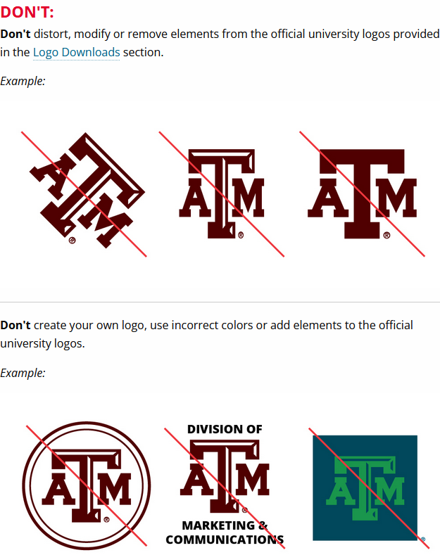
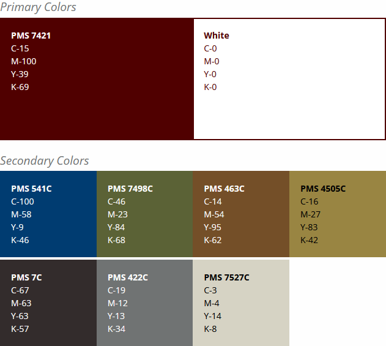

Texas A&M Brand Guidelines
Texas A&M University is one of Texas' premier institutions for both education and collegiate sports, so it's only fitting that they'd have a smart and tight brand identity. Below are the guidelines for said branding in a number of key areas.
Logo

Above is pictured a series of guidelines on what cannot be done to the Texas A&M logo, to protect it's sanctity and power as an image.
Colors

Above is pictured the color guide for Texas A&M and it's branding - all of the colors on this page are sourced from this guide!
All material sourced from here.